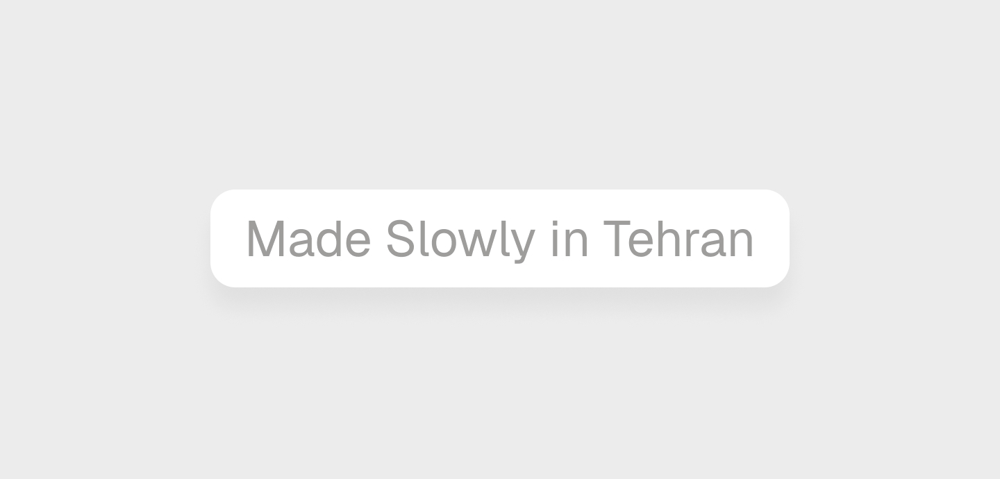
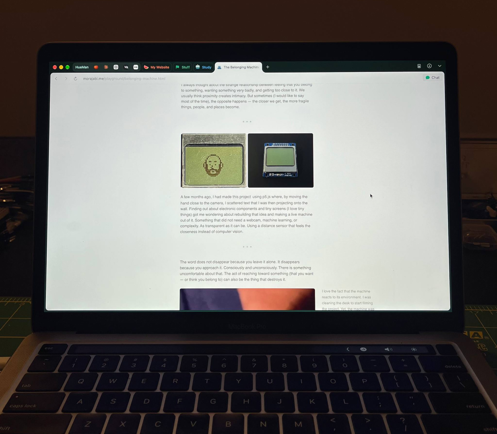

Slow

I was having lunch with my colleagues at work today. We talked about how fast this year has gone by. Tomorrow is exactly the middle of the Iranian year. Yet, we had no idea how it happened. Looking back at the past months: protests, a 40-day war, and several internet blackouts. It was tough.
Everyone checking the news every day to stay aware of a possible war, and talking about it several times a day. We actually hugged goodbye today when leaving work.
Trying to keep my head above water, I work on my projects and website every evening when I get home. I spend most of my weekends building personal projects. Considering that the internet might get cut off at any time. Thinking that bombs may arrive unexpectedly. But I keep making things and building stuff in tiny pieces, slowly. Very slowly. Daydreaming about the future I imagine myself in.

The past year was indeed very slow. I remember the time I started writing on Medium in early November 2025. I was watching The Coding Train on YouTube to learn p5.js. Things were building up. It was turning into a habit. And then we lost the internet for a couple of weeks. And once we got connected, I didn’t feel like doing those things for a while. And as I picked up where I had left everything, the 40-day war happened, and it was like living in hell. Away from my family and friends, trying to survive. Hearing Mom cry every day on the phone because she was worried. And then again, after the war ended, stubbornly picking up the things again. It was slow.
I’m not sure if this slowness comes from the situation and the mental load that everyone and I are carrying, or if it’s a way of running away from all the noise and from how fast the world can be today, or simply from paying careful attention.
Either way, I am getting to like this slowness.
Hoping not to be the boiling frog.
So I'm adding this at the footer of my website, in the home page.